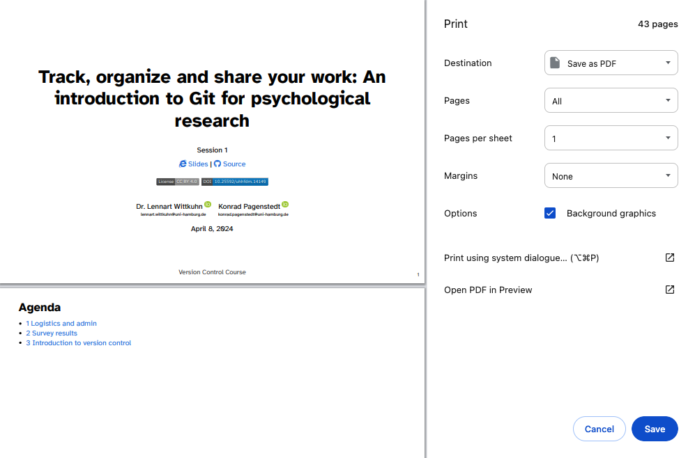

/Users/myusername/DocumentsThis session
In this session, you will work on the following tasks:
- Reading: Read the chapter “Command Line” in the Version Control Book.
- Implementation: Try out the commands in the chapter.
- Exercises: Work on the exercises for the
recipesproject. - Quiz: Test your knowledge with the quiz.
As always:
- Try out the commands of this session and play around with them.
- Check whether you have achieved the learning objectives.
- Ask questions!
- Let’s git started!
Learning objectives
At the end of this session, you should be able to answer the following questions and / or achieve the following learning objectives:
üí° You can navigate directories using the command line.
üí° You can use shortcuts like the tilde or dots to navigate your file system.
üí° You can explain the difference between absolute and relative paths.
üí° You can use arguments and flags to modify command-line commands.
üí° You understand the concept of wild cards (*) and can use it for system navigation.
recipes project
At the end of this session, you should have accomplished the following:
- You used the command line to create a folder on your computer called
recipes. - You used the command line to create a file called
recipes.txtinside therecipesfolder.
Please keep the recipes folder! We will continue to use it in the following sessions.
Exercises
Creating a folder and a file
Within your chosen folder, create a new subfolder and name it recipes. Navigate into the recipes folder. Create a new file and name it recipes.txt. Confirm the creation of the file by listing the contents of the recipes folder. Which commands did you use?
Writing and opening files
Add the title “My Favorite Recipes” to recipes.txt. Which command or method did you use?
Creating multiple files
Go back to your main course-related folder. Using the command line, create three new files: notes.txt, assignments.txt, and schedule.txt. Provide the command you used.
Wildcards
Use a wildcard pattern to list all .txt files in your folder. Which command did you use?
Bonus question
Imagine, that you are in a folder containing multiple text files with various extensions, including .txt, .md, and .docx. You want to move all the .txt files to a subfolder named “text_files” while keeping the other file types in the current directory. Write a series of command-line commands to accomplish this task, including creating the “text_files” subdirectory. Explain each step in your solution.
Solutions
Solution: Navigation and setup
For folder navigation, use cd. To display the contents of a folder, use ls. To display the path of the current working directory, use pwd.
For example, on macOS if you navigated to the Documents folder and used pwd, the path looks like this:
Solution: Creating a folder and a file
- Create a folder called
recipes:
mkdir recipes- Navigate into the
recipesfolder:
cd recipes- Create a file and name it
recipes.txt:
touch recipes.txt- List the contents of the
recipesfolder:
ls
Solution: Writing and opening files
I added the title to recipes.txt by using the following command:
echo "My Favorite Recipes" > recipes.txtThis command writes “My Favorite Recipes” to the file, overwriting any existing content.
Solution: Creating multiple files
touch notes.txt assignments.txt schedule.txt
Solution: Wildcards
ls *.txt
Solution: Bonus question
- Creating the “text_files” subfolder:
mkdir text_files- Moving all the
.txtfiles to the “text_files” subfolder:
mv *.txt text_filesSlides
How can I download the slides as a PDF file?
To print the slides to PDF, do the following:
- Toggle into Print View using the E key (or using the Navigation Menu).
- Open the in-browser print dialog (CTRL/CMD+P).
- Change the Destination setting to Save as PDF.
- Change the Layout to Landscape.
- Change the Margins to None.
- Enable the Background graphics option.
- Click Save.
Note: This feature has been confirmed to work in Google Chrome, Chromium as well as in Firefox.
Here’s what the Chrome print dialog would look like with these settings enabled:

These instructions were copied from the Quarto documentation (MIT License) and slightly modified.
Cheatsheet
| Command | Description |
|---|---|
pwd |
Displays the path of the current working directory |
cd <PATH> |
Changes the current working directory to <PATH> |
cd ~ |
Changes the current working directory to the user’s home directory |
cd .. |
Moves up one folder |
cd ../.. |
Moves up two folders |
clear |
Clears the contents of your command line window |
ls |
Lists files and folders in the current working directory |
ls <PATH> |
Lists files and folders in <PATH> |
ls -a |
Lists all files (including hidden files) in the current working directory |
ls -alh |
Lists all files in a long format that is easy to read for humans |
[Command] --help |
Displays all possible flags for a specific command (on Windows) |
man [Command] |
Displays all possible flags for a specific command (on macOS) |
mkdir <FOLDER> |
Creates a new folder called <FOLDER> |
mkdir <FOLDER1> <FOLDER2> |
Creates two separate folders called <FOLDER1> and <FOLDER2> |
touch <FILE> |
Creates a new empty file called <FILE> |
open <FILE> |
Opens the file called <FILE> (on macOS) |
start <FILE> |
Opens the file called <FILE> (on Windows) |
echo "example text" >> file.txt |
Writes “example text” into file.txt |
cat <FILE> |
Displays the content of <FILE> |
mv FILE.txt <FOLDER> |
Move FILE.txt into <FOLDER> |
mv <FOLDER_OLD> <FOLDER_NEW> |
Renames <FOLDER_OLD> to <FOLDER_NEW> |
ls -alh *.csv |
Uses a wildcard to list all .csv files in the current working directory |
rm -r <FOLDER> |
Removes the folder <FOLDER> |
history |
Display the command history of the current terminal session |
history > history.txt |
Saves the entire command history to a file named history.txt (overwrites existing content in history.txt) |
history >> history.txt |
Adds the entire command history to the end of the file named history.txt |
tree |
Displays a graphical representation of the directory structure |
wget <URL> |
Downloads a file from the specified |